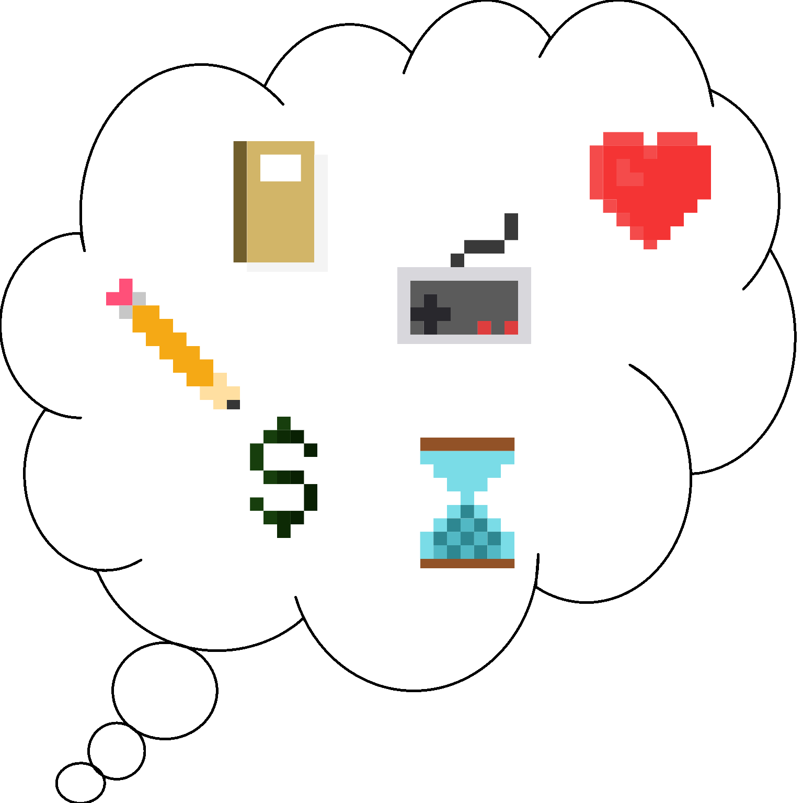
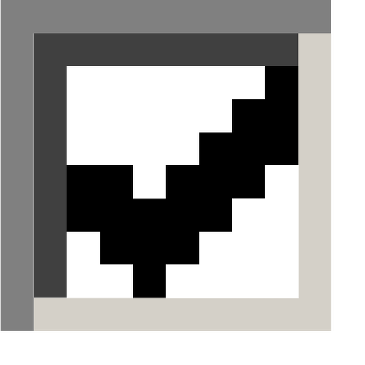
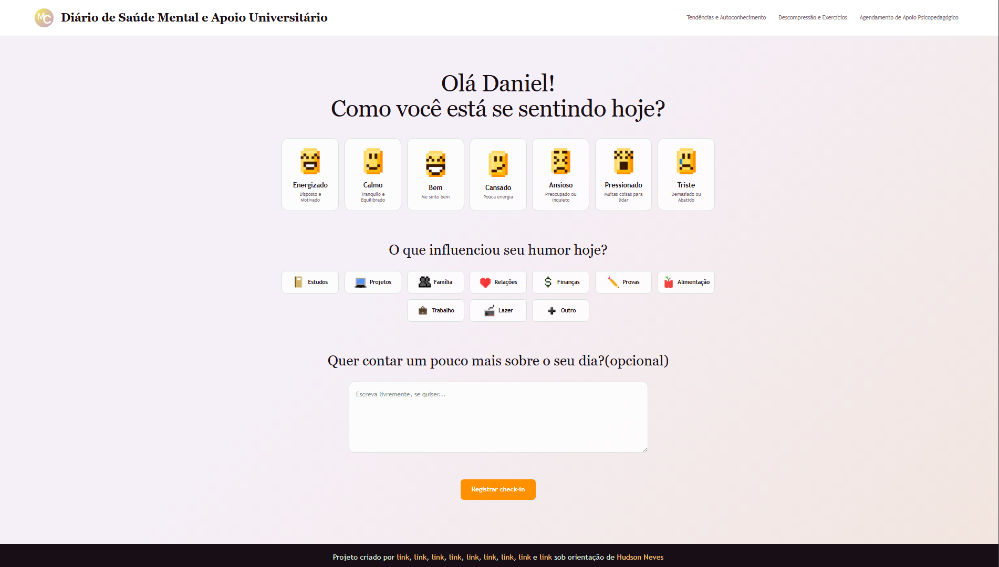
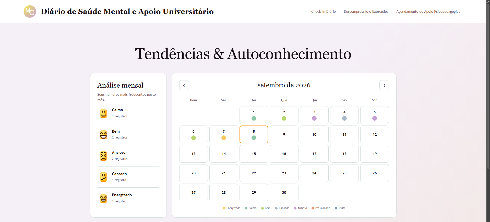
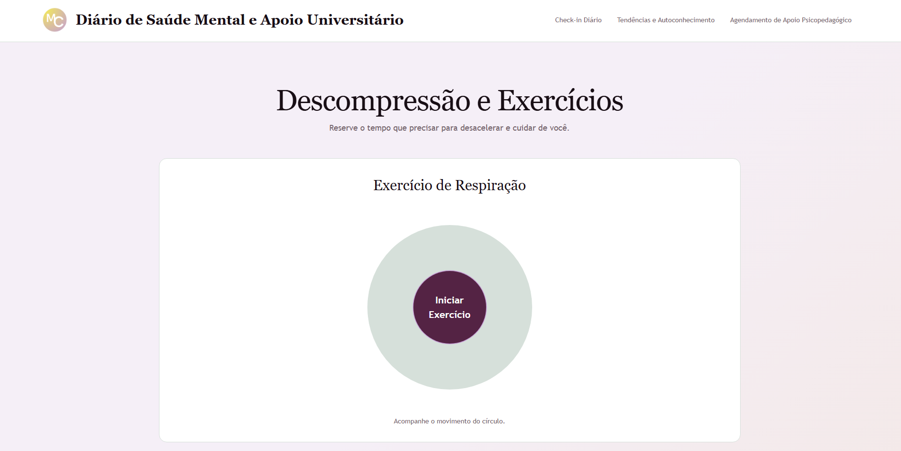
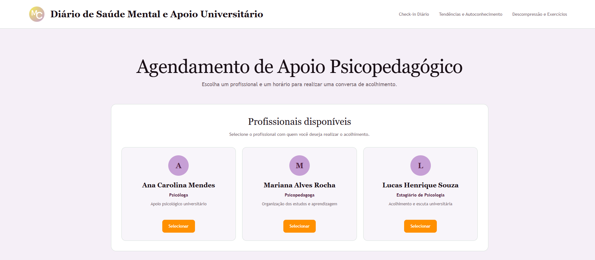

Sua saúde mental também importa
Uma proposta de cuidado e autoconhecimento para acompanhar a jornada universitária.
Sobre o Projeto
O MindCare é um projeto desenvolvido para auxiliar estudantes universitários no acompanhamento do próprio bem-estar emocional durante a vida acadêmica. A iniciativa surgiu da percepção de que a rotina universitária, marcada por provas, trabalhos, prazos e responsabilidades, pode gerar situações de estresse, cansaço e sobrecarga. Diante disso, buscamos criar um ambiente digital simples e acolhedor, que incentive o autoconhecimento e o cuidado com a saúde mental.
Nossa Proposta
Nossa proposta é reunir, em uma única plataforma, recursos que ajudem os estudantes a compreender melhor suas emoções e a desenvolver hábitos de autocuidado. O MindCare é direcionado principalmente ao público universitário, considerando os desafios presentes nessa fase da vida. Acreditamos que o bem-estar emocional também merece atenção durante a formação acadêmica e que pequenas práticas de autocuidado podem contribuir para uma rotina mais equilibrada e consciente.
Funcionalidades

Check-in Diário
Permite registrar o estado emocional do dia, selecionar fatores que podem influenciar o humor e adicionar observações pessoais.Autoconhecimento
Propõe o acompanhamento do histórico emocional por meio de registros gráficos e tendências, ajudando o estudante a observar padrões ao longo do tempo.Descompressão
Reúne a proposta de exercícios guiados de respiração, áudios para relaxamento e conteúdos educativos sobre sono, organização dos estudos e gestão do tempo.Atendimento
Apresenta uma área dedicada a aproximar os estudantes das possibilidades de apoio psicológico e psicopedagógico disponíveis no ambiente universitário.Demonstração
Check-in

Autoconhecimento

Descompressão

Atendimento

Equipe e Próximos Passos
O MindCare é desenvolvido por uma equipe de estudantes de Engenharia de Software do UNICEPLAC, com atividades organizadas de forma colaborativa e divisão de responsabilidades entre os integrantes. O protótipo utiliza HTML5, CSS3 e JavaScript, com arquivos JSON para representar dados durante a fase de desenvolvimento. Como próximos passos, estão previstos a implementação do backend em Java com Spring Boot, a integração com banco de dados MySQL, a autenticação de usuários e a realização de testes de usabilidade.
Acesse aqui o projeto